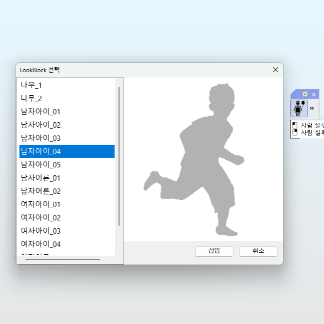
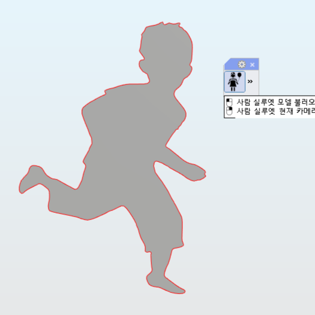
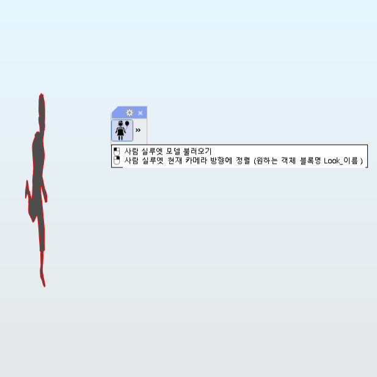
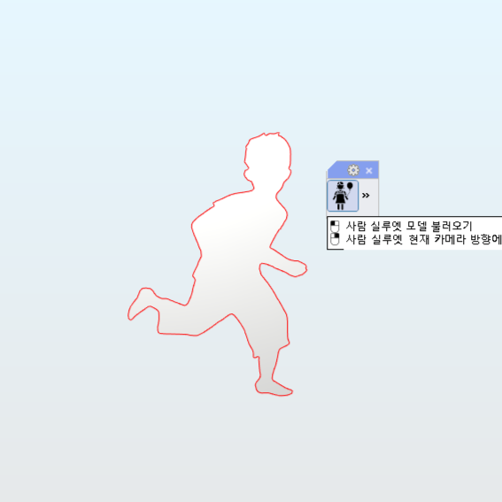

LookBlock
LookBlock :
사람 실루엣 모델링 파일을 불러와 블록으로 삽입하는 기능입니다.
LookView :
사람 실루엣 객체를 현재 카메라 방향에 맞춰 자동 정렬하는 기능입니다.
Steps (LookBlock)
LookBlock 명령 실행
원하는 객체 선택
삽입 위치를 지정하고 결과 확인
 
Steps (LookView)
LookView 명령 실행
사람 실루엣이 현재 카메라 방향으로 정렬
 
Note
정렬 대상을 추가하려면 객체의 블록명을 “Look_이름” 형식으로 지정하십시오.